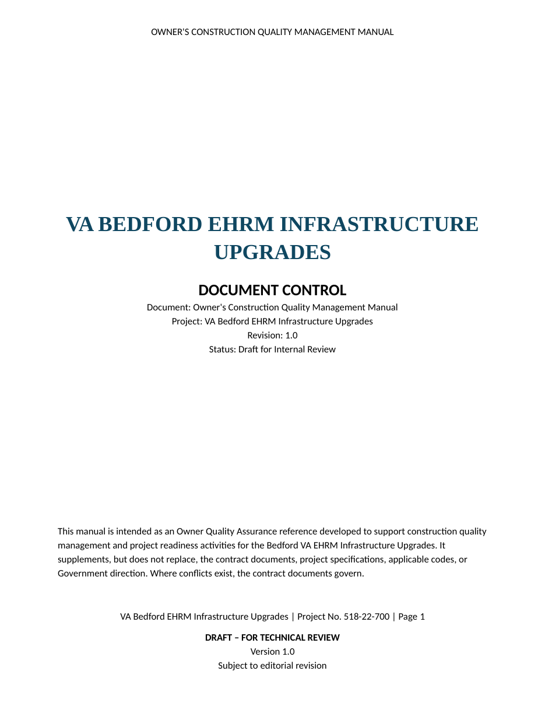
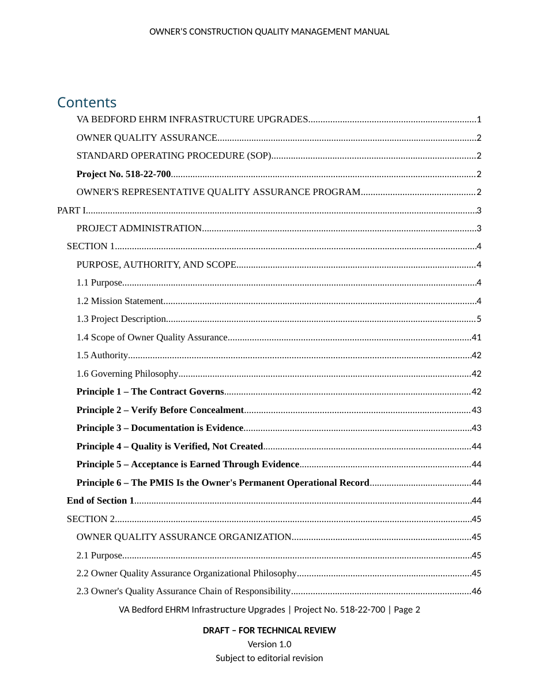
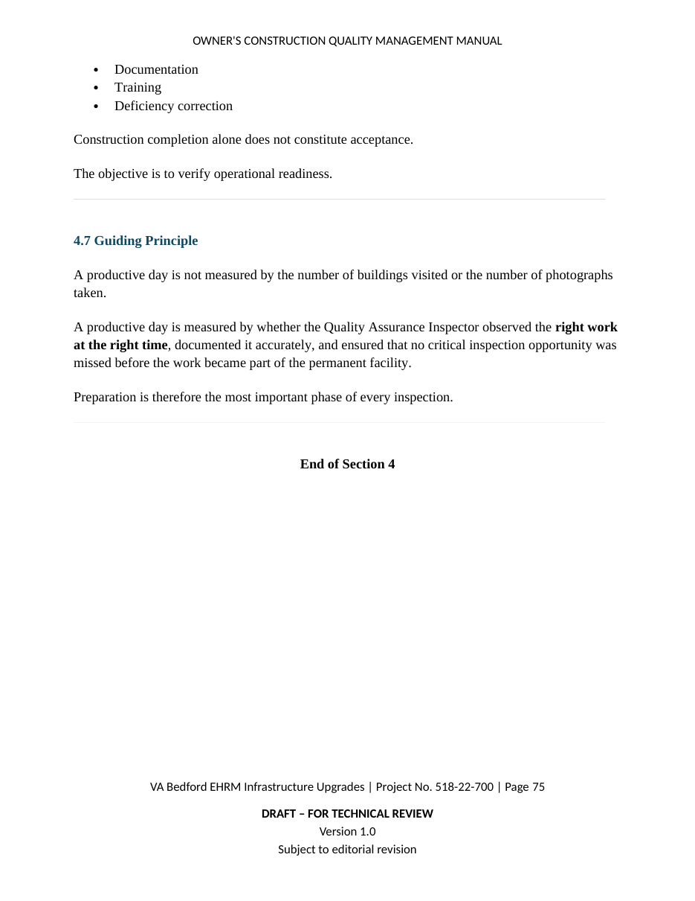
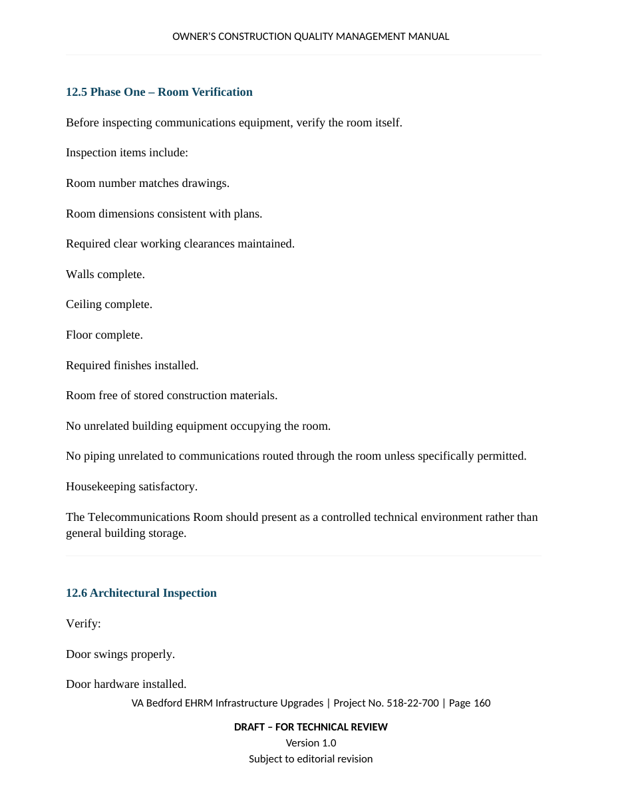
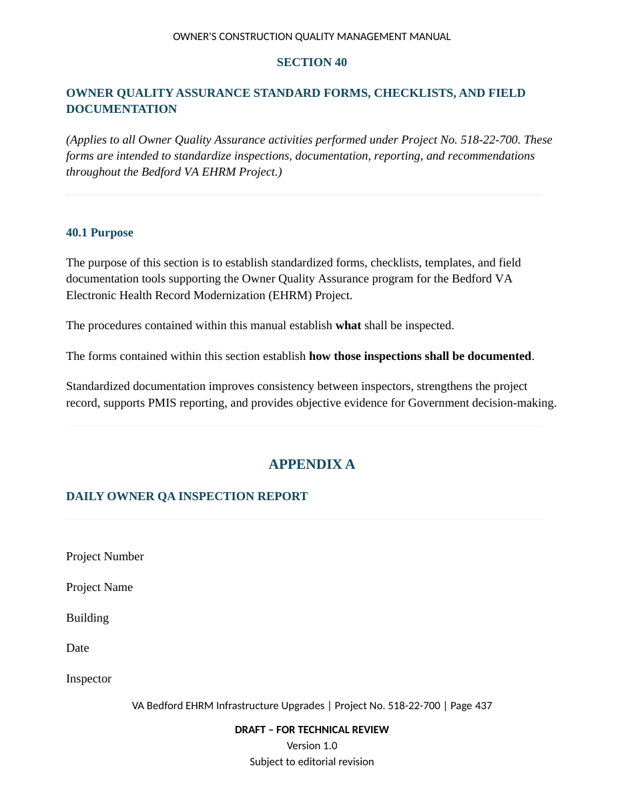
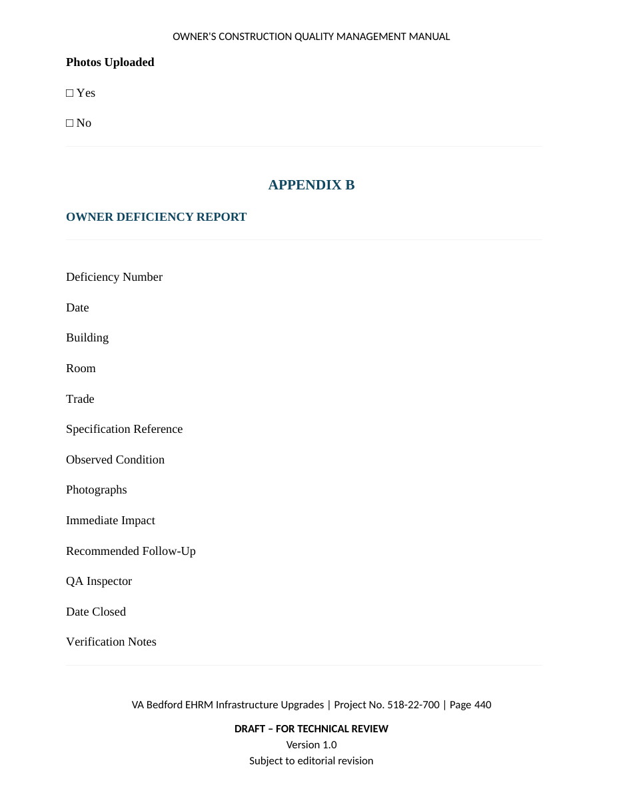
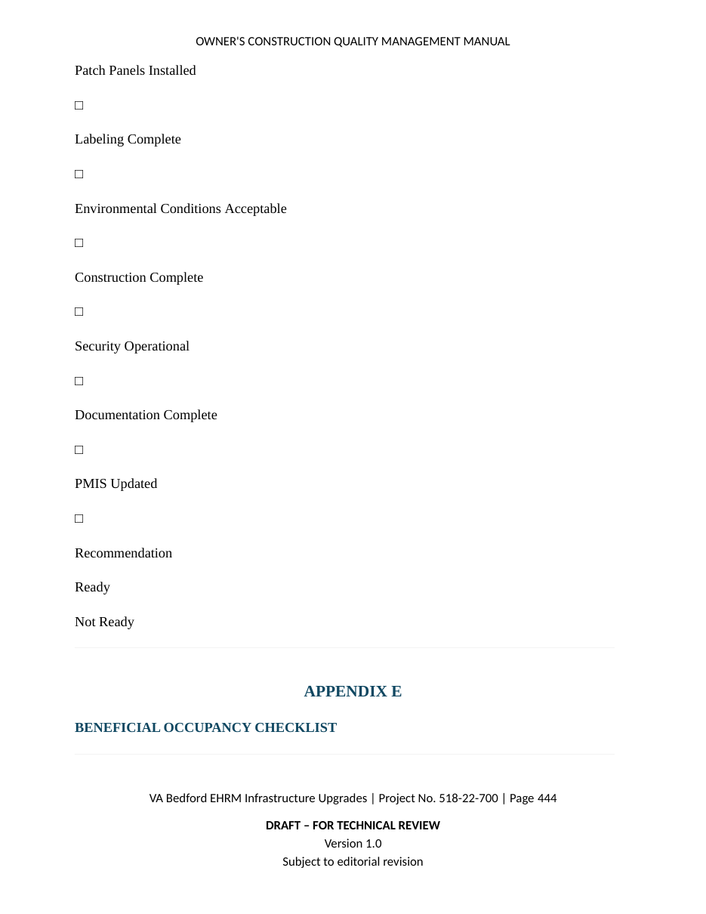

← Back to selected work
Knowledge Systems · Construction Quality
Owner's Construction Quality Management Manual
A 451-page engineering publication transforming federal construction specifications into a repeatable owner-side quality management system for the VA Bedford EHRM Infrastructure Upgrades project.

Revision 1.0 · Draft for Internal ReviewProject Impact
A complete field and management framework.
The Challenge
Specifications define obligations. They do not automatically create an operating system.
The Bedford EHRM project spans more than thirty occupied medical-campus buildings and includes telecommunications rooms, a main computer room, fiber backbone replacement, Category 6A cabling, electrical and HVAC upgrades, plumbing, fire protection, fire alarm, CCTV, access control, commissioning, OIT activation, and building-by-building acceptance.
The owner quality function therefore needed more than a collection of checklists. It required a coherent framework showing how contract requirements, contractor quality control, field verification, objective evidence, deficiency management, readiness decisions, and owner acceptance fit together.
The Solution
A technical publication designed as an operational system.
The manual establishes mission, authority, decision hierarchy, daily workflow, definable features of work, specification-based procedures, trade-specific acceptance criteria, communications, reporting, deficiency control, building readiness, OIT activation, beneficial occupancy, final acceptance, warranty support, and continuous improvement.
Publication Architecture
Structured for navigation, repeatability, and evidence.
Part I
Project administration, authority, decision structure, and daily owner-QA foundations.
Parts II–V
General requirements and specification-driven procedures across the technical divisions.
Part VI
Owner-QA operations, records, reporting, communications, photography, and deficiency control.
Part VII
Building readiness, OIT activation, turnover, beneficial occupancy, and final acceptance.
Part VIII
Forms, checklists, matrices, data standards, acceptance tools, and field playbooks.
PMIS Linkage
Connects field verification, evidence, readiness, and deficiencies to project data and executive visibility.
Standardized Procedure Model
Every section teaches the why before the how.
Purpose & Intent
Explains why the requirement matters and how it fits within owner-side quality oversight.
Prerequisites
Defines documents, approvals, submittals, conditions, and coordination needed before verification.
Verification Procedure
Provides a repeatable field process for observing, testing, documenting, and evaluating the work.
Objective Evidence
Identifies the records, photographs, reports, test results, and approvals needed to support acceptance.
Red Flags & Risks
Surfaces conditions that warrant escalation, added documentation, or withheld readiness.
Acceptance Criteria
Connects field findings to clear readiness, turnover, and owner-acceptance decisions.
Document Gallery
From governance to field execution.
The selected pages follow the publication's operating story: control the document, organize the information, define the procedure, verify the work, document deficiencies, and make readiness decisions.








Delivery & Methods
A publication created as a working quality system.
The project combined source-document analysis, document architecture, specification cross-referencing, technical writing, field-procedure design, AI-assisted drafting, production formatting, and PMIS integration.
Microsoft Word
Federal Specifications
Document Architecture
Technical Publishing
Workflow Engineering
Information Design
PMIS Integration
AI-Assisted Development
What This Demonstrates
Solutions engineering beyond software alone.
Requirements Analysis
Extracting operational obligations, acceptance criteria, and evidence requirements from dense source material.
Knowledge Architecture
Designing a navigable hierarchy that supports field use, training, reference, and accountability.
Workflow Engineering
Converting contractual requirements into repeatable procedures and decision gates.
Technical Publishing
Producing a controlled professional publication with consistent structure, tables, appendices, and document controls.
Quality Systems Design
Connecting contractor quality control, owner verification, evidence, deficiencies, readiness, and acceptance.
Field Tool Development
Creating reports, checklists, matrices, playbooks, and forms that support daily execution.
Why It Matters
This publication demonstrates the ability to transform complex technical requirements into structured operational systems that improve consistency, decision-making, accountability, readiness, and field execution. The work required far more than writing: it required requirements discovery, information architecture, workflow design, quality-system integration, and production of a controlled professional artifact.
Controlled Project Artifact
The case study presents the work without distributing the controlled manual.
Document imagery and selected pages demonstrate the publication’s architecture, field utility, and quality-system design. The complete working document remains reserved for guided demonstration.